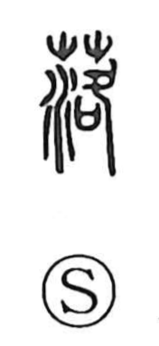

落

Uncategorized
Kun: ochiru, otosu | On: raku
to fall ・ to drop ・ to come down ・ to cease
Explanation
A phono-semantic character built with 洛 as its phonetic, giving the on-yomi raku. Within 洛, the element 各 conveys the idea of something descending from above. Ancient glosses distinguish 零 for what falls from the sky—rain or dew—and 落 for what falls from trees—leaves; from there, the character broadened to the general senses “to fall,” “to come down,” and even “to stop, cease.” In ritual usage, 落 also refers to the blood-purification performed when a building or vessel is completed. Paired with 成, which denotes fixing a final ornament and purifying when the forging of a pike is finished, the compound 落成 came to mean the ceremonial completion of construction.